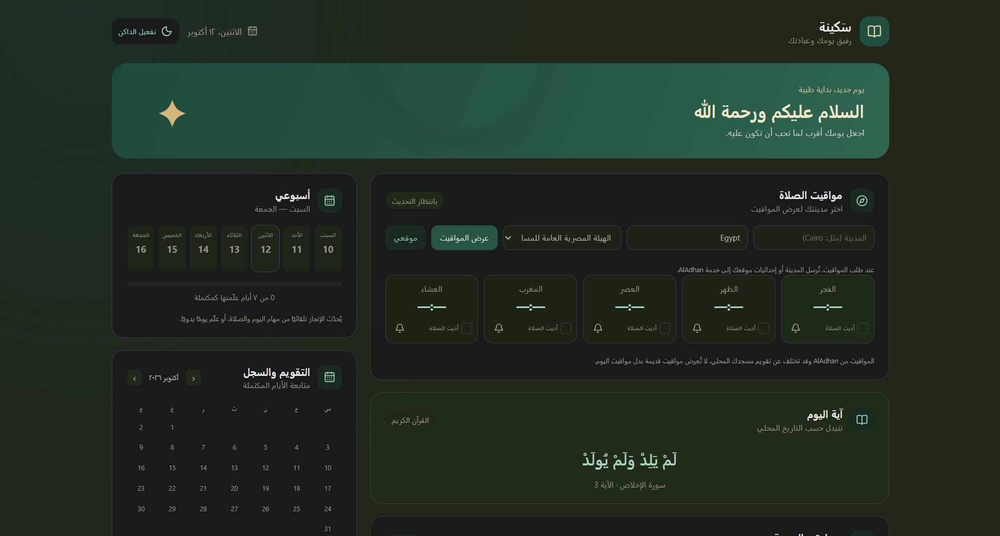

INDEPENDENTLY BUILT. THOUGHTFULLY DESIGNED.
MARCOMILAD.
Building the web, one interaction at a time.
I create responsive web experiences using HTML, CSS, and JavaScript, with a focus on visual clarity and thoughtful interactions.
01A FEW THINGS I’VE MADE
Selected work.
Small, useful web projects built around everyday routines.
Screenshots supplied for both projects are shown as provided.
02A LITTLE ABOUT ME
Useful by nature.
Thoughtful by design.
I'm Marco Milad — a web creator who enjoys turning ideas into useful, engaging digital experiences.
I focus on building clean, responsive websites with HTML, CSS, and JavaScript, paying attention to both how things look and how they work.
03THE BUILDING BLOCKS
The tools
I build with.
A small, focused front-end toolkit for useful web experiences.
HTML
Structure and meaning for the web.
CSS
Layout, visual rhythm, and responsive style.
JavaScript
Interaction and behavior that bring pages to life.
04HOW I LIKE TO WORK
A clear path
from idea to interface.
- 01
Understand the problem
Get clear on what needs to work and who it should help.
- 02
Plan the interface
Give the content and interactions a simple structure.
- 03
Build the experience
Turn the plan into a responsive, usable page.
- 04
Test and refine
Check the details, then make the experience clearer.
05LET’S TALK
Have a project
in mind?
Let's connect. Choose the way that works best for you.